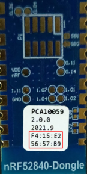

Matter Thread Light
This section covers flashing a Matter Thread light accessory on an nRF52840 dongle and commissioning it onto the OTBR Thread network.
Flashing the Accessory
Select an nRF52840 dongle for OTBR, note its MAC address, and plug it into an open USB port on the RPi.
Press the reset button on the dongle to put it into DFU mode. A red LED on the dongle will start blinking. The reset button is on the far side of the board from the USB connector. Note that the button does not face up. It will have to push it from the outside in, towards the USB connector.
Capture the absolute path to the static symlink of this dongle by matching the MAC address (all caps no delimiters) with the following command.
# example: export LIGHT_TTY=$(find /dev/serial/by-id -type l | grep C794EB8363FA) export LIGHT_TTY=$(find /dev/serial/by-id -type l | grep <mac>) echo $LIGHT_TTY
Flash the nRF52840 firmware package onto the dongle.
docker run -it --rm \ -v $PWD/build/Release:/root \ --device $(readlink -f $LIGHT_TTY) \ caubutcharter/nrfutil:latest dfu usb-serial -pkg nrf52840-dongle-thread-lighting-app.zip -p $(readlink -f $LIGHT_TTY)
# latest docker run -it --rm \ -v $PWD/build/Release:/root \ --device $(readlink -f $LIGHT_TTY) \ caubutcharter/nrfutil:latest dfu usb-serial -pkg nrf52840-dongle-thread-lighting-app-LATEST.zip -p $(readlink -f $LIGHT_TTY) # test event docker run -it --rm \ -v $PWD/build/Release:/root \ --device $(readlink -f $LIGHT_TTY) \ caubutcharter/nrfutil:latest dfu usb-serial -pkg nrf52840-dongle-thread-lighting-app-TEST_EVENT_7.zip -p $(readlink -f $LIGHT_TTY)
Commissioning the Device
Capture the current Active Operational Dataset and Extended PAN ID from the OTBR service.
sudo ot-ctl dataset active -x
Start the
chip-device-ctrlMatter controller.cd third_party/connectedhomeip source out/python_env/bin/activate sudo out/python_env/bin/chip-device-ctrl --bluetooth-adapter=hci0
Reseat the dongle. BLE advertisements are only enabled for 15 minutes after boot. The LED should show a Short Flash On (50 ms on/950 ms off).
Note
If the dongle was previously commissioned, even unsuccessfully, the settings may still exist on the dongle even after flashing. This can be observed by the light pattern not matching the above statement. To clear the settings, hold the
SW1button (different from the button used to flash the dongle) until the following sequence of LED patterns completes (about 6 seconds):LD1andLD2will start blinking in unisonboth LEDs will stop blinking
Discovery the Matter Thread Light over BLE and capture the discriminator. It will usually be hard coded to
3840.ble-scan
Set the pairing credentials to the previously obtained Active Operational Dataset as a hex-encoded value.
set-pairing-thread-credential <active_operational_dataset>
Using the output above, connect to the Matter Thread Light over BLE. The pin code should be hard coded to
20202021. The LED should show a Rapid Even Flashing (100 ms on/100 ms off). See BLE Connection Failures for troubleshooting if the connection fails. This will automatically commission the device.# example: connect -ble 3840 20202021 123456 connect -ble <discriminator> <pin_code> <temp_id>Control the light.
zcl OnOff On 123456 1 0 zcl OnOff Off 123456 1 0 zcl OnOff Toggle 123456 1 0 zcl LevelControl MoveToLevel 123456 1 0 level=10 transitionTime=0 optionMask=0 optionOverride=0
Exit
chip-device-ctrl.exit